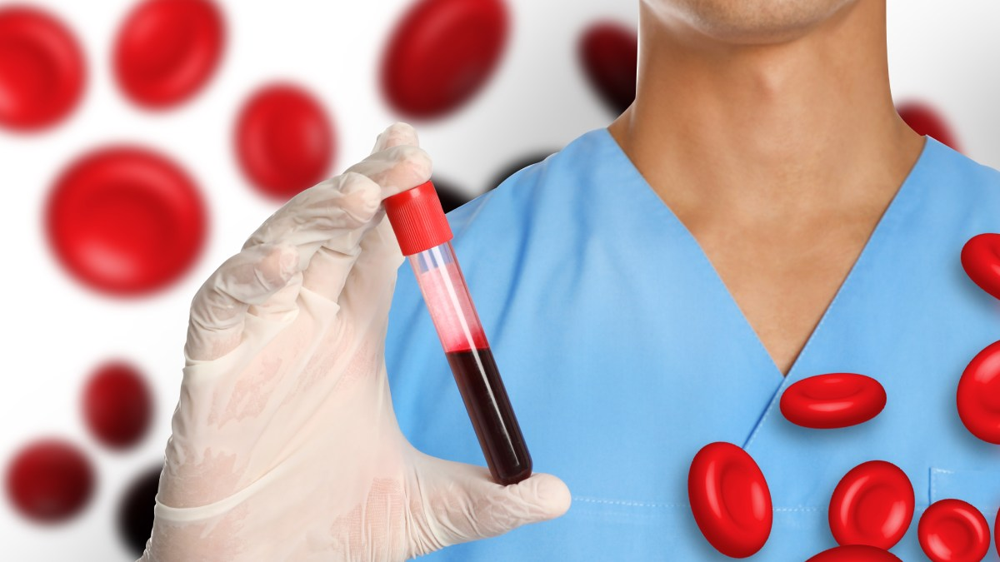
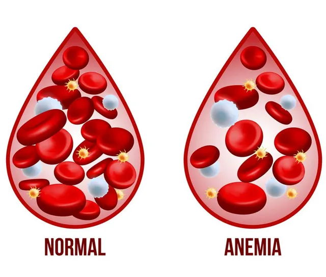
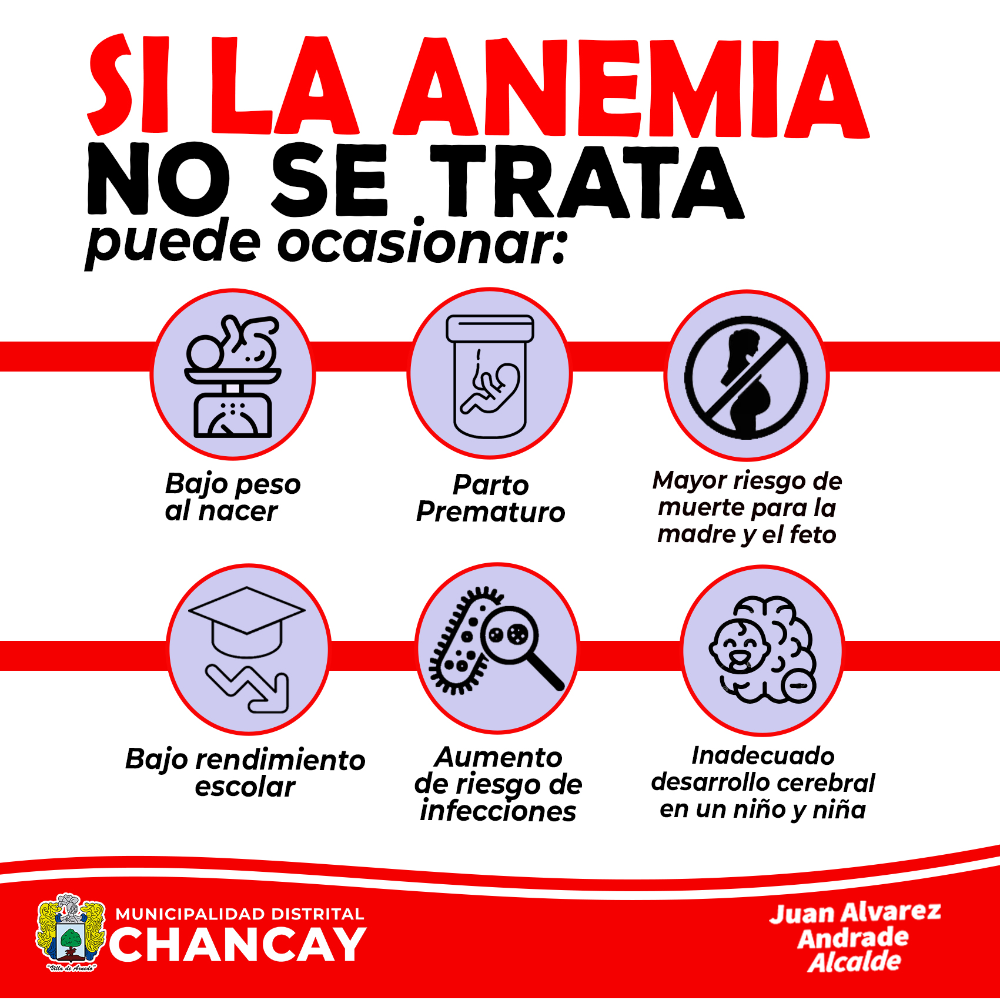
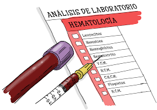

La Anemia
Definición
La anemia es una condición médica caracterizada por una disminución en el número de glóbulos rojos o en la concentración de hemoglobina en la sangre, lo que reduce la capacidad de la sangre para transportar oxígeno a los tejidos del cuerpo. Esto puede resultar en síntomas como fatiga, debilidad, palidez y dificultad para respirar.

Causas de la Anemia
- Deficiencia de hierro: Es la causa más común, ya que el hierro es necesario para la producción de hemoglobina. La falta de hierro puede ser causada por una dieta inadecuada, pérdidas sanguíneas crónicas (como menstruaciones abundantes o sangrados gastrointestinales), o problemas de absorción (como en la enfermedad celíaca).
- Deficiencia de vitaminas: La falta de vitamina B12 o ácido fólico puede afectar la producción de glóbulos rojos saludables, lo que causa anemias megaloblásticas.
- Anemia por enfermedades crónicas: Algunas enfermedades como infecciones crónicas, enfermedades autoinmunes, insuficiencia renal crónica o cáncer pueden interferir con la producción de glóbulos rojos..
- Trastornos genéticos: La anemia de células falciformes, la talasemia y otras formas hereditarias de anemia pueden alterar la producción o la estructura de los glóbulos rojos.
- Pérdida excesiva de sangre: Puede ser consecuencia de hemorragias internas o externas, como úlceras gastrointestinales, hemorragias menstruales abundantes o traumatismos.
- Problemas en la médula ósea: Trastornos como la leucemia, la mielodisplasia o la aplasia medular pueden afectar la capacidad de la médula ósea para producir suficientes glóbulos rojos.
- Infecciones o toxinas: Algunas infecciones o la exposición a ciertas toxinas (como metales pesados) pueden dañar los glóbulos rojos o interferir con su producción.

Consecuencias de la Anemia
Las consecuencias de la anemia dependen de su gravedad y de la rapidez con que se desarrolle. Entre las posibles consecuencias se encuentran:
- Fatiga y debilidad: La falta de oxígeno en los tejidos lleva a una sensación constante de cansancio y fatiga, dificultando las actividades cotidianas.
- Dificultad para respirar: Las personas con anemia pueden experimentar dificultad para respirar, especialmente al hacer esfuerzos físicos, debido a la falta de oxígeno disponible para los músculos y órganos.
- Palidez: Una de las manifestaciones más comunes de la anemia es la palidez de la piel y las mucosas debido a la disminución de glóbulos rojos.
- Compromiso cardiovascular: PEn casos graves, la anemia puede provocar un aumento de la frecuencia cardíaca y el esfuerzo del corazón, lo que puede conducir a insuficiencia cardíaca o agravar problemas cardíacos preexistentes.
- Daño a órganos vitales: Si la anemia se prolonga sin tratamiento, los órganos vitales pueden verse afectados por la falta de oxígeno adecuado.

Diagnóstico de la Anemia
- Historia clínica: El médico preguntará sobre los síntomas, antecedentes de enfermedades, hábitos alimenticios, menstruación (en mujeres) y otros factores de riesgo, y realizará un examen físico para detectar signos como palidez, taquicardia o soplos cardíacos.
- Hemograma completo: El hemograma es una prueba básica que mide el número de glóbulos rojos, la concentración de hemoglobina y el hematocrito (porcentaje de glóbulos rojos en la sangre).
- Concentración de hierro y ferritina: Identifica deficiencias de hierro.
- Pruebas de vitamina B12 y ácido fólico: Para descartar deficiencias vitamínicas
- Reticulocitos: Medición de los glóbulos rojos inmaduros, que ayuda a determinar si la médula ósea está produciendo suficientes glóbulos rojos.
- Pruebas adicionales: Si se sospecha de una causa subyacente específica, como enfermedades crónicas, trastornos de la médula ósea o hemorragias internas, se pueden realizar pruebas más específicas, como endoscopias, biopsias de médula ósea, ecografías o pruebas de sangre adicionales.

Tabla Dinámica para Predicción de Anemia
| Género | Hemoglobina (g/dL) | MCH (pg) | MCHC (g/dL) | MCV (fL) | Resultado | Acción |
|---|